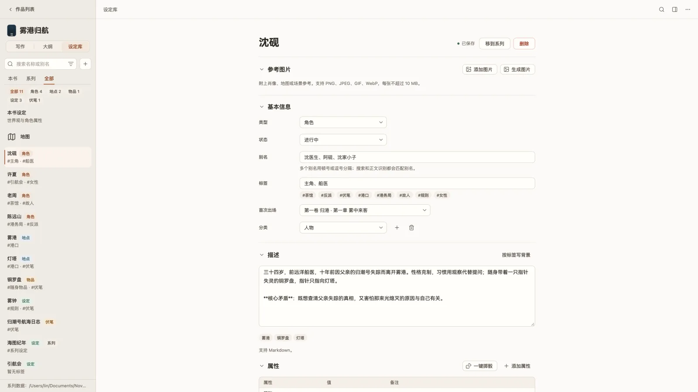
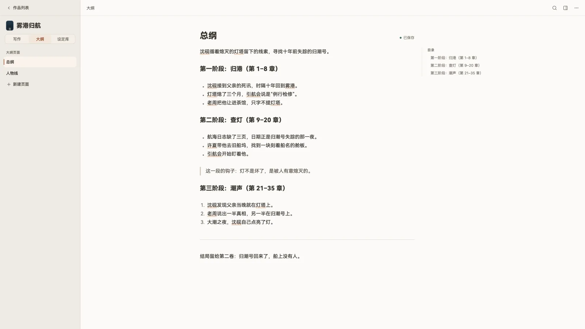

设定库与大纲
设定卡、本书设定、地图、大纲页面和章节树。

设定卡
左侧栏切到「设定库」。卡片分角色、地点、物品、伏笔、支线、其他。每张卡可以有：
- 别名、标签、分类和自由属性；参考图片（单张不超过 10 MB）。
- 给 AI 的描述：补全和整理时发给模型；研究笔记：只给你自己看，永远不发给模型。
- AI 可见性：始终可见 / 提到时可见 / 仅手动或经关系引用 / 从不。
- 关系、外部链接，以及「进展」：从某一小节起才生效的新状态（比如“第 12 章起失去左手”）。
- 「提及」：正文里哪些地方被识别为这张卡，可以排除误识别的短语。
正文里出现卡片名或别名时会自动识别，鼠标停上去显示卡片摘要。这一步按规则匹配，不需要模型。
同一系列的多本书可以共享卡片：「移到系列 / 移回本书」。
本书设定
设定库顶部固定一行「本书设定」：世界观与背景、图片画风、角色属性模板和骰子。每张角色卡都继承这里的属性模板，适合写有数值、境界或属性面板的网文。「起名」和「一键掷骰」都在本地完成，不需要模型。
地图
设定库里的「地图」入口可以「导入地图…」（一张图片），在图上点击添加地点，拖动标记移动，点标记打开地点卡；地点卡会显示「所在地图」。
大纲

左侧栏切到「大纲」。大纲由多个「大纲页面」组成，和正文用同一个编辑器，支持 / 菜单和目录。在大纲标题里写上章节范围（如「第1-8章」），写到这些章时，参考面板「本章」的「当前阶段」就会显示对应的大纲。
点书名或卷名进入「全书概览 / 分卷概览」：封面、大纲、相关设定、各章备注和摘要一览。
章节树
结构是 卷 › 章 › 小节，每个小节是一份独立的 Markdown 文件。右键菜单里可以：
- 新建卷、章、小节；重命名、编辑备注、上移下移或移动。
- 从某章拆出新卷、从某小节拆出新章；合并到上一章或上一卷。
- 设置是否参与编号；章节编号格式（第1章 / 第一章 / 不编号）在「项目设置 → 基本信息」。
- 归档（随时「恢复到」任意章）、移入回收站或永久删除。
搜索与片段
- 全项目搜索：范围可选正文、摘要、设定、片段、提示词、大纲，支持区分大小写、全词、正则。替换要先「预览替换」，替换前会自动存版本，整批可以撤销。
- 片段：收集素材，可加星、归档、搜索，在参考面板查看。
- 写作进度：计时、最近 35 天写作日历、全书 / 每日 / 每周目标，可导出 CSV。